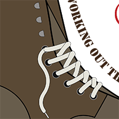
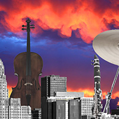
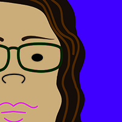
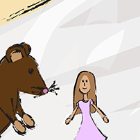
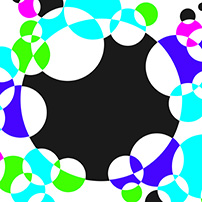
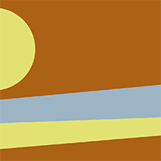

Digital Illustration



Image created for a directors training class. Directors As Leaders.

Collage of the buffalo skyline replaced with music instruments. Time & Image, Semester 3.

Self portrait part 1. Time & Image, Semester 3.


Book illustration for the story Thumbelina. Time & Image, Semester 3.

Abstract composition. Time & Image, Semester 3.


Part 2 of my final, Digital Painting, semester 6.